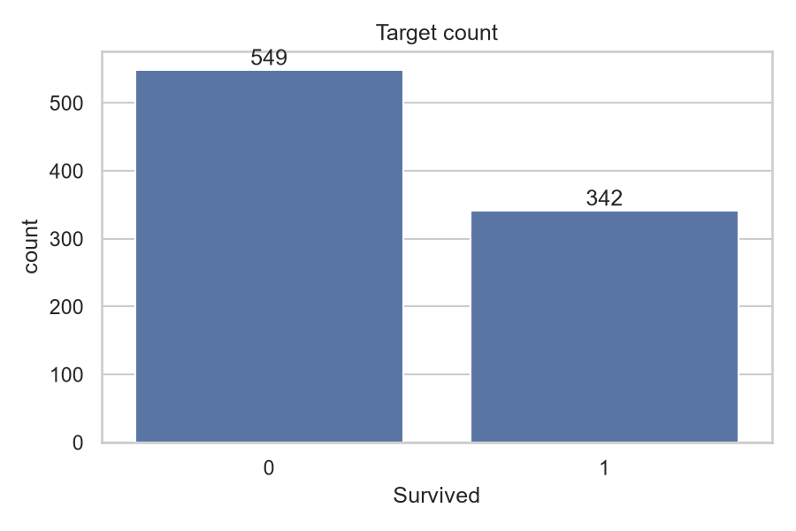
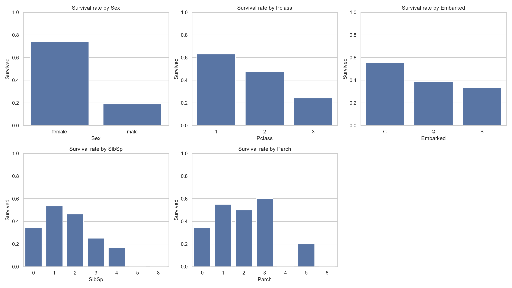
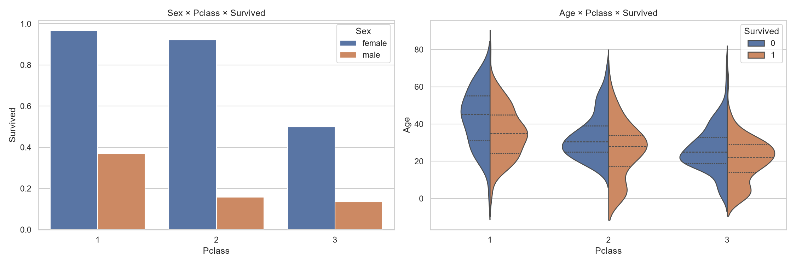
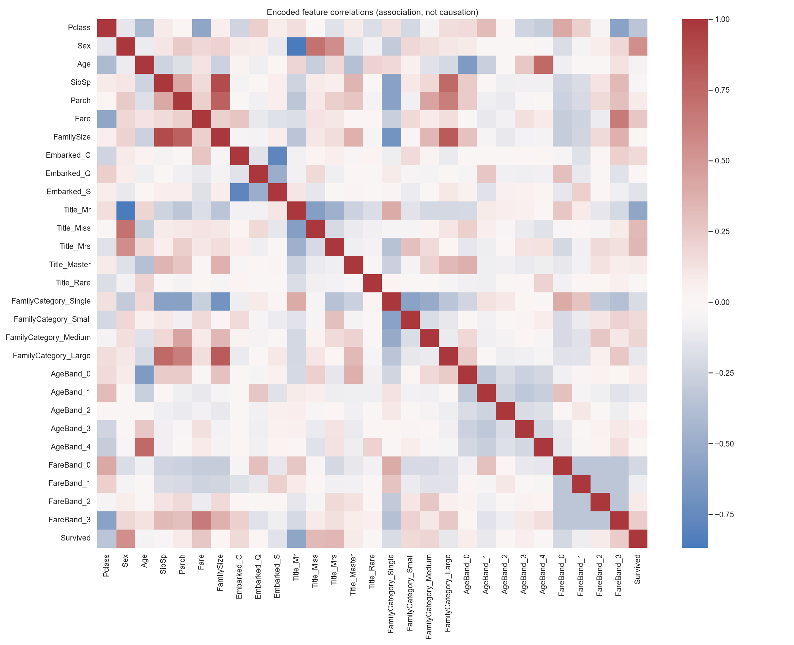
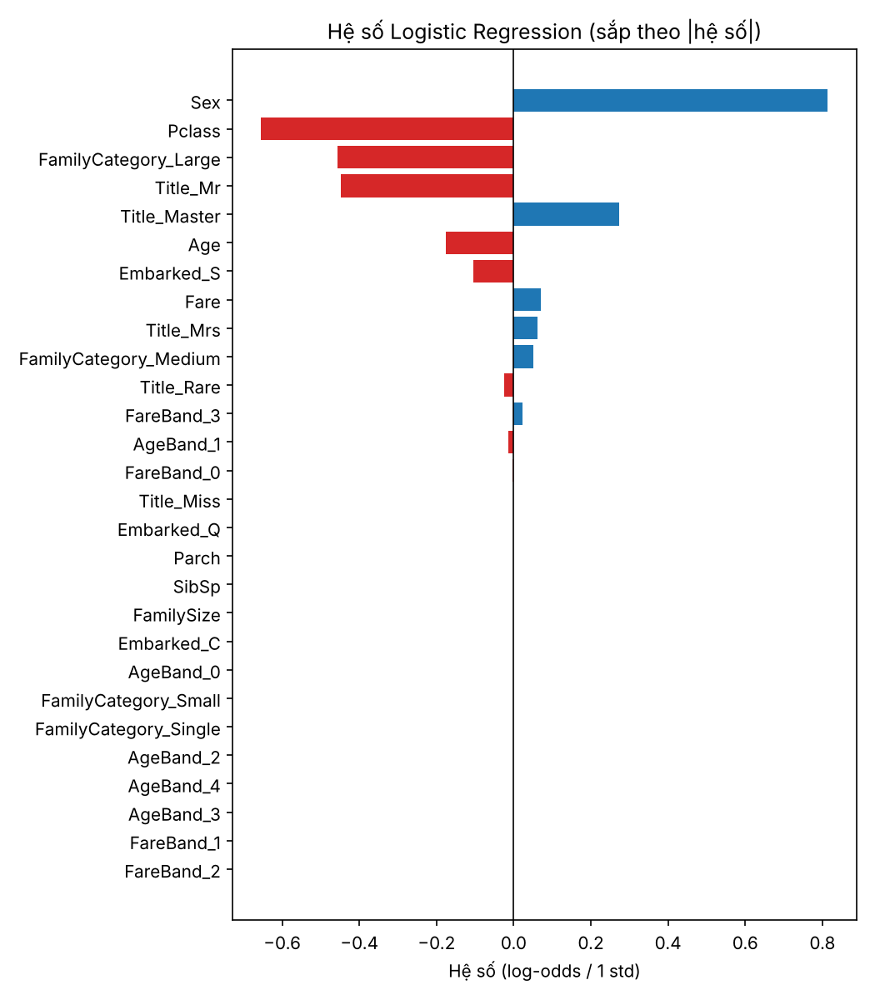
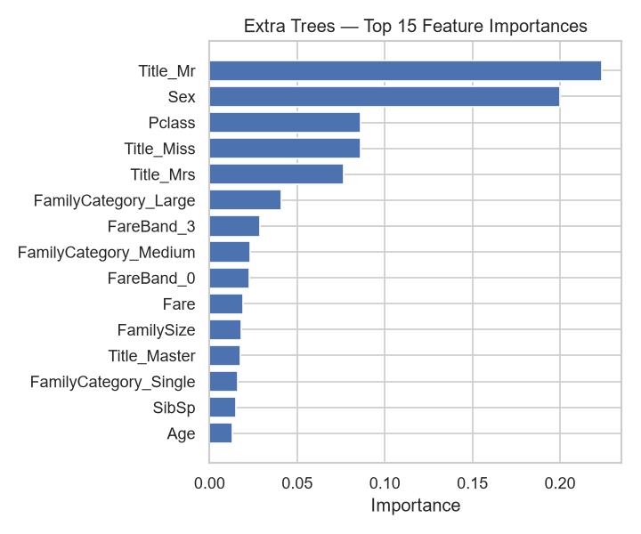
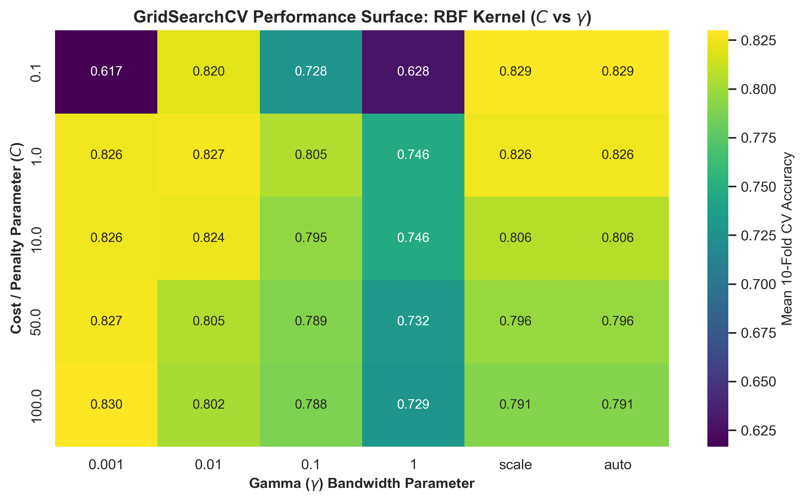
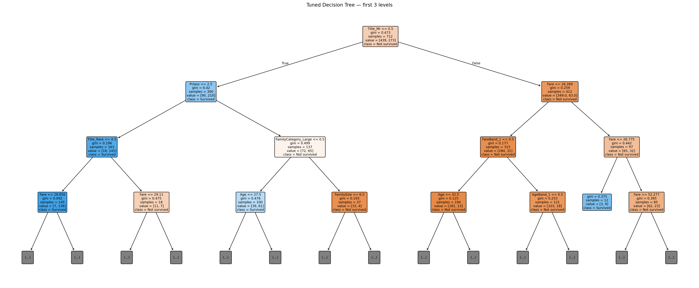

Mini Capstone · Nhóm AIL
Ai sống sót
trên Titanic?
So sánh bốn mô hình phân loại trên cùng một pipeline dữ liệu.
Logistic RegressionThành viên 1
Extra TreesThành viên 2
SVMThành viên 3
Decision TreeThành viên 4
Nội dung trình bày
- Giới thiệu bài toán và dữ liệu
- Kiểm tra chất lượng dữ liệu và EDA
- Tiền xử lý và feature engineering
- Data contract dùng chung
- Bốn mô hình: LR, Extra Trees, SVM, Decision Tree
- So sánh kết quả
- Kết luận, hạn chế và hướng phát triển
Bài toán: dự đoán Survived từ hồ sơ hành khách
891
hành khách có nhãn (train), 418 cần dự đoán (test Kaggle)
38,4%
tỷ lệ sống sót — dữ liệu lệch lớp nhẹ (549 / 342)
4
mô hình, mỗi thành viên đảm nhận một mô hình
Phân loại nhị phân: Survived ∈ {0, 1}. Mục tiêu là xây dựng quy trình ML tái lập được, để bốn mô hình được so sánh công bằng trên cùng dữ liệu, cùng cách chia và cùng bộ metric.
Data audit: ba cột có dữ liệu thiếu
| Cột | Thiếu (train) | Xử lý |
|---|
| Cabin | 687 (77%) | Loại bỏ |
| Age | 177 (20%) | Median theo Sex × Pclass |
| Embarked | 2 | Mode của train (S) |
| Fare (test) | 1 | Median của train |
Không có bản ghi trùng, PassengerId là duy nhất và không được dùng làm feature.

Phân bố Survived trên tập train
EDA: giới tính và hạng vé quyết định nhiều nhất

Tỷ lệ sống sót theo các biến phân loại- Nữ sống sót 74,2%, nam chỉ 18,9%.
- Hạng 1: 63,0% · hạng 2: 47,3% · hạng 3: 24,2%.
- Lên tàu ở Cherbourg (C) có tỷ lệ sống 55,4%, cao hơn S (33,7%) — phần lớn do tỷ lệ khách hạng 1.
- Trẻ em và gia đình nhỏ có lợi thế; gia đình ≥ 5 người sống sót rất thấp.
EDA đa biến: Sex × Pclass và tương quan

Sống sót theo Sex × Pclass và Age × Pclass
Heatmap tương quan sau mã hóa (tương quan ≠ nhân quả)
Pipeline dữ liệu dùng chung
Đọc train/test
Audit & EDA
Điền thiếu (học từ train)
Feature engineering
One-hot encoding
Hold-out split
Xuất artifacts
- Title từ Name: Mr, Miss, Mrs, Master, Rare
- FamilySize = SibSp + Parch + 1 → Single / Small / Medium / Large
- AgeBand, FareBand: ngưỡng phân vị học từ train
- Loại Name, Ticket, Cabin sau khi khai thác
- Kết quả: 28 feature, không còn NaN hay cột object
- Không scale ở phần chung — LR và SVM scale trong
Pipeline riêng để tránh rò rỉ
- Mọi thành viên đọc trực tiếp
artifacts/common/
Data contract: luật chơi chung cho bốn mô hình
712/179
train / validation, stratify theo Survived
10-fold
StratifiedKFold, shuffle
Accuracy
metric chính khi tuning
Metric bổ sung: precision, recall, F1, ROC-AUC, confusion matrix. Tập test Kaggle không được dùng để chọn mô hình. Quy trình mỗi mô hình: baseline → 10-fold CV → GridSearchCV → đánh giá hold-out → learning curve → refit trên toàn bộ 891 mẫu → submission.
Logistic Regression
Thành viên 1
0,827CV ± 0,032 (baseline 0,822)
0,838Validation accuracy
0,813Precision
0,754Recall
0,872ROC-AUC (cao nhất)
- Pipeline:
StandardScaler → LogisticRegression, scaler chỉ fit trên training fold
- 26 cấu hình, tuning chỉ 1,9 giây
- Best: L1, C=0,1, solver liblinear — L1 đưa 10+ hệ số về 0, tự chọn feature
- Sex (+0,81) và Pclass (−0,65) ảnh hưởng mạnh nhất; gia đình lớn và Title_Mr giảm cơ hội sống

Hệ số sau chuẩn hóa
Extra Trees
Thành viên 2
0,837CV ± 0,035 (baseline 0,784)
0,832Validation accuracy
0,820Precision
0,725Recall
0,854ROC-AUC
- Tuning coarse-to-fine: 144 + 27 cấu hình, ~283 giây
- Best: 300 cây, max_depth=8, max_features=log2, min_samples_leaf=4, min_samples_split=10
- Train–CV gap giảm từ 0,20 xuống ~0,02 sau khi giới hạn độ sâu
- Top feature: Title_Mr, Sex, Pclass, Title_Miss, Title_Mrs

Feature importance
Support Vector Machine
Thành viên 3
0,830CV (baseline 0,826)
0,844Validation accuracy (cao nhất)
0,825Precision (cao nhất)
0,754Recall
0,866ROC-AUC
- Pipeline:
StandardScaler → SVC; grid list-of-dicts cho RBF và linear
- Best: RBF, C=100, gamma=0,001 — biên mềm, độ rộng kernel lớn
- 287 support vectors (150 / 137) trên 712 mẫu train
- Tuning nhanh nhất: ~41 giây

Accuracy CV theo C × gamma
Decision Tree
Thành viên 4
0,838CV ± 0,040 (cao nhất)
0,832Validation accuracy
0,800Precision
0,754Recall
0,860ROC-AUC
- Grid lớn nhất: 2.880 cấu hình × 10 fold = 28.800 lần fit (~250 giây)
- Best: gini, min_samples_leaf=8 — cây sâu 8, 49 lá
- Train–CV gap giảm từ 0,196 xuống 0,036: overfitting được kiểm soát
- Title_Mr chiếm 49% importance, sau đó Fare và Pclass

Ba tầng đầu của cây tối ưu
So sánh trên cùng validation split
| Mô hình | CV acc | Val acc | Precision | Recall | F1 | AUC |
|---|
| Logistic Reg. | 0,827 | 0,838 | 0,813 | 0,754 | 0,782 | 0,872 |
| Extra Trees | 0,837 | 0,832 | 0,820 | 0,725 | 0,769 | 0,854 |
| SVM (RBF) | 0,830 | 0,844 | 0,825 | 0,754 | 0,788 | 0,866 |
| Decision Tree | 0,838 | 0,832 | 0,800 | 0,754 | 0,776 | 0,860 |
| Dummy | — | 0,615 | 0 | 0 | 0 | 0,500 |
Validation accuracy (vạch đỏ: dummy 0,615)
Đọc kết quả: khác biệt nhỏ hơn độ dao động
Chênh lệch ~1%
Bốn mô hình chỉ cách nhau 0–2 mẫu trên 179. Độ lệch chuẩn CV (0,032–0,040) lớn hơn khoảng cách giữa chúng.
Recall là điểm yếu chung
Mọi mô hình bỏ sót 17–19 trên 69 người sống sót (recall 0,72–0,75) — lớp thiểu số khó hơn.
Feature nhất quán
Sex/Title_Mr và Pclass dẫn đầu ở cả hệ số LR lẫn importance của hai mô hình cây — khớp với EDA về “phụ nữ và trẻ em trước”.
Kết luận
- Chọn SVM (RBF, C=100, γ=0,001) làm mô hình cuối: accuracy 0,844, F1 0,788, precision cao nhất, tuning nhanh.
- Logistic Regression (L1) đứng thứ hai: accuracy 0,838, ROC-AUC cao nhất 0,872, CV ổn định nhất — lựa chọn tốt khi cần giải thích bằng hệ số.
- Decision Tree có CV tốt nhất (0,838) và luật quyết định dễ đọc.
- Pipeline chung + data contract giúp bốn thành viên làm song song mà kết quả vẫn so sánh được.
- Feature engineering (Title, FamilySize) đóng góp nhiều hơn việc chọn thuật toán.
Hạn chế và hướng phát triển
Hạn chế
- Một hold-out 179 mẫu → kết quả có độ bất định cao
- Chỉ dùng accuracy để tuning, chưa tối ưu ngưỡng cho recall
- Impurity-based importance có thể thiên lệch
- Chưa đánh giá trên leaderboard Kaggle
Hướng phát triển
- So sánh bằng repeated CV và kiểm định thống kê
- Ensemble: voting / stacking bốn mô hình
- Permutation importance, SHAP để giải thích
- Feature mới: nhóm vé, boong tàu từ Cabin
Cảm ơn
thầy cô và các bạn
Mời đặt câu hỏi.